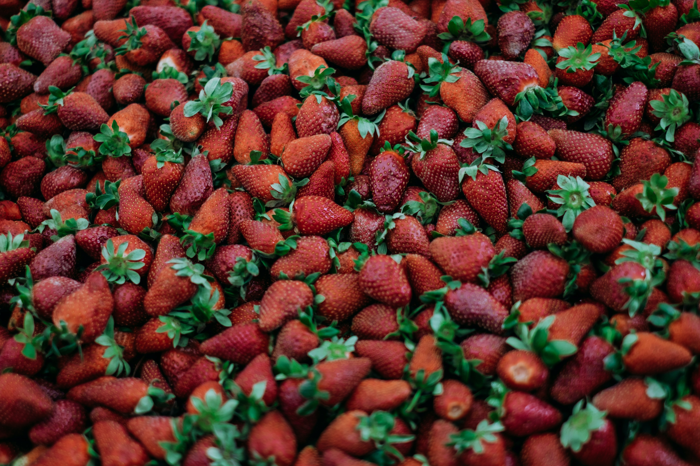
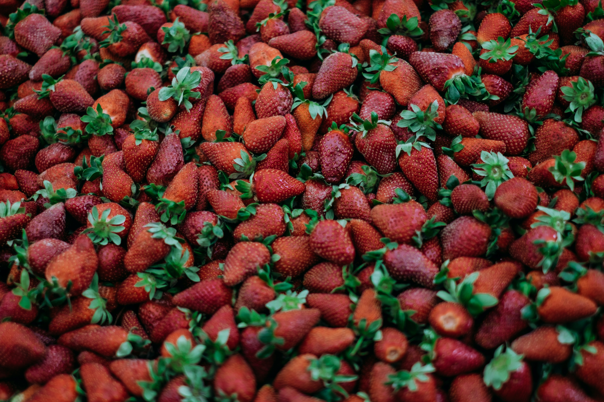

about us
Welcome to our organic fruit farm, where we combine the beauty of nature with the precision of advanced technology to bring you the freshest and most flavorful fruits and fruit juices possible.
Our farm is situated in the heart of a lush, green valley, where the sun shines bright and the air is crisp and clean. We believe in the power of nature to provide us with the best fruits, and we are committed to using organic and sustainable farming practices that protect the environment and promote the health of our soil, plants, and animals.
At our farm, we grow a variety of organic fruits, including apples, oranges, berries, and more. We carefully hand-select each fruit to ensure it is ripe and ready for harvest, and we use advanced technology to preserve the fruits’ natural flavor and freshness.

Our state-of-the-art fruit processing facility is equipped with the latest technology to extract the purest juice from our fruits while retaining their natural taste and nutritional value. We use a high-pressure processing (HPP) method to keep our juices fresh and delicious, without the need for any artificial preservatives or additives.
Our HPP process subjects our juices to high pressure, effectively killing any harmful bacteria and extending the shelf life of the juice. This process helps to retain the natural flavor and nutrients of the fruits, ensuring that our juices are the freshest and healthiest possible.
 
